Bài 13: giới thiệu công thức
Bài 13: Giới thiệu về Công thức
/en/excel/page-layout-and-printing/content/
Giới thiệu
Một trong những tính năng mạnh mẽ nhất trong Excel là khả năngtính toánthông tin số bằng cách sử dụngcông thức. Giống như một chiếc máy tính, Excel có thể cộng, trừ, nhân và chia. Trong bài học này, chúng tôi sẽ hướng dẫn bạn cách sử dụngtham chiếu ôđể tạo các công thức đơn giản.
Hãy xem video bên dưới để tìm hiểu thêm về cách tạo công thức trong Excel.
Toán tử toán học
Excel sử dụng các toán tử tiêu chuẩn cho các công thức:dấu cộngcho phép cộng (+),dấu trừcho phép trừ (-),dấu hoa thịcho phép nhân (*),dấu gạch chéo lêncho phép chia (/) vàdấu mũ(^) cho số mũ.

Tất cả các công thức trong Excel phải bắt đầu bằngdấu bằng(=). Điều này là do ô chứa hoặc bằng công thức và giá trị mà nó tính toán.
Hiểu tham chiếu ô
Mặc dù bạn có thể tạo các công thức đơn giản trong Excel bằng cách sử dụng các số (ví dụ:=2+2hoặc=5*5), nhưng hầu hết bạn sẽ sử dụngđịa chỉ ôđể tạo công thức. Điều này được gọi là tạotham chiếu ô. Việc sử dụng tham chiếu ô sẽ đảm bảo rằng công thức của bạn luôn chính xác vì bạn có thể thay đổi giá trị của các ô được tham chiếu mà không cần phải viết lại công thức.
Trong công thức bên dưới, ô A3 cộng giá trị của ô A1 và A2 bằng cách tạo tham chiếu ô:
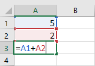
Khi bạn nhấn Enter, công thức sẽ tính toán và hiển thị câu trả lời trong ô A3:
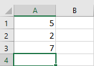
Nếu giá trị trong các ô được tham chiếu thay đổi, công thức sẽ tự động tính toán lại:
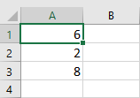
Bằng cách kết hợp toán tử với tham chiếu ô, bạn có thể tạo nhiều công thức đơn giản trong Excel. Công thức cũng có thể bao gồm sự kết hợp của tham chiếu ô và số, như trong các ví dụ bên dưới:
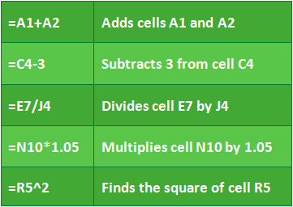
Để tạo một công thức:
Trong ví dụ bên dưới, chúng tôi sẽ sử dụng một công thức đơn giản và tham chiếu ô để tính toán ngân sách.
- Chọnôsẽ chứa công thức. Trong ví dụ của chúng tôi, chúng tôi sẽ chọn ôD12.
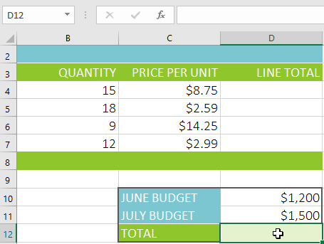
2. Nhậpdấu bằng (=). Hãy chú ý cách nó xuất hiện trong cảôvàcông thứcthanh.3. Nhậpôđịa chỉcủa ô bạn muốn tham chiếu đầu tiên trong công thức: ôD10trong ví dụ của chúng tôi.đường viền màu xanhsẽ xuất hiện xung quanh ô được tham chiếu.
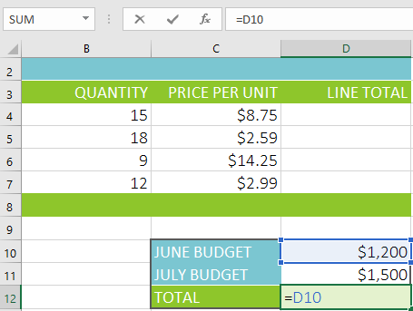
4. Nhậptoán tử toán họcbạn muốn sử dụng. Trong ví dụ của chúng tôi, chúng tôi sẽ nhậpdấu cộng(++). 5. Nhậpđịa chỉ ôcủa ô bạn muốn tham chiếu thứ hai trong công thức: ôD11trong ví dụ của chúng tôi.viền màu đỏsẽ xuất hiện xung quanh ô được tham chiếu.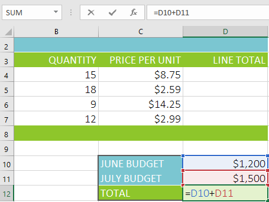
6. NhấnEntertrên bàn phím của bạn. Công thức sẽ đượctínhvàgiá trịsẽ được hiển thị trong ô. Nếu bạn chọn lại ô, hãy lưu ý rằng ô hiển thị kết quả, trong khi thanh công thức hiển thị công thức.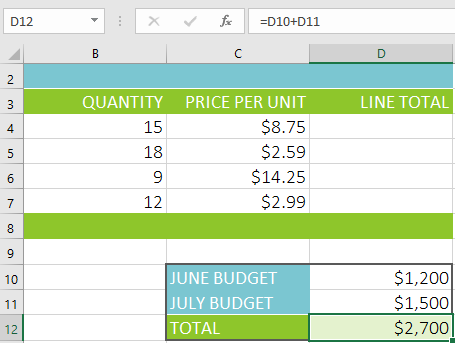
Nếu kết quả của một công thức quá lớn để hiển thị trong một ô, nó có thể xuất hiện dưới dạngdấu thăng(#######) thay vì một giá trị. Điều này có nghĩa là cột không đủ rộng để hiển thị nội dung ô. Chỉ cầntăng chiều rộng cộtđể hiển thị nội dung ô.
Sửa đổi giá trị bằng tham chiếu ô
Ưu điểm thực sự của tham chiếu ô là chúng cho phép bạncập nhậtdữ liệutrong bảng tính mà không cần phải viết lại công thức. Trong ví dụ bên dưới, chúng tôi đã sửa đổi giá trị của ô D10 từ $1.200 thành $1.800. Công thức ở ô D12 sẽ tự động tính toán lại và hiển thị giá trị mới ở ô D12.
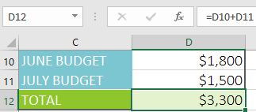
Excelkhông phải lúc nào cũng cho bạn biếtnếu công thức của bạn có lỗi, vì vậy, bạn có trách nhiệm kiểm tra tất cả các công thức của mình. Để tìm hiểu cách thực hiện việc này, bạn có thể đọc bài học Kiểm tra kỹ công thức của bạn từ hướng dẫn về Công thức Excel của chúng tôi.
Để tạo một công thức bằng phương pháp trỏ và nhấp:
Thay vì nhập địa chỉ ô theo cách thủ công, bạn có thểtrỏ và nhấpcác ô bạn muốn đưa vào công thức của mình. Phương pháp này có thể tiết kiệm rất nhiều thời gian và công sức khi tạo công thức. Trong ví dụ dưới đây, chúng tôi sẽ tạo một công thức để tính chi phí đặt hàng một số hộp đựng đồ bạc bằng nhựa.
- Chọnôsẽ chứa công thức. Trong ví dụ của chúng tôi, chúng tôi sẽ chọn ôD4.
2. Nhậpdấu bằng (=). 3. Chọnôbạn muốn tham chiếu đầu tiên trong công thức: ôB4trong ví dụ của chúng tôi.địa chỉ ôsẽ xuất hiện trong công thức.
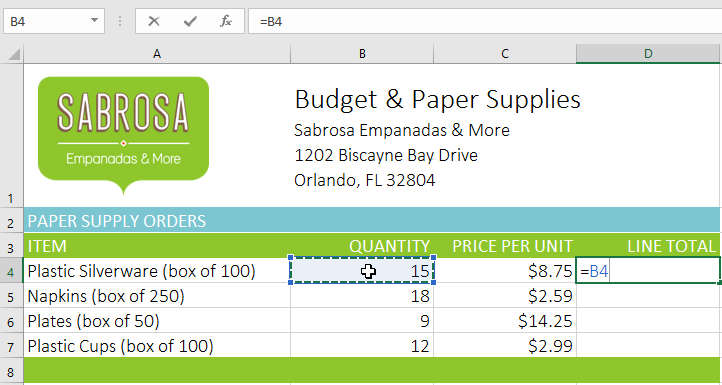
4. Nhậptoán tử toán họcbạn muốn sử dụng. Trong ví dụ của chúng tôi, chúng tôi sẽ nhậpdấu nhân (*). 5. Chọnôbạn muốn tham chiếu thứ hai trong công thức: ôC4trong ví dụ của chúng tôi.địa chỉ ôsẽ xuất hiện trong công thức.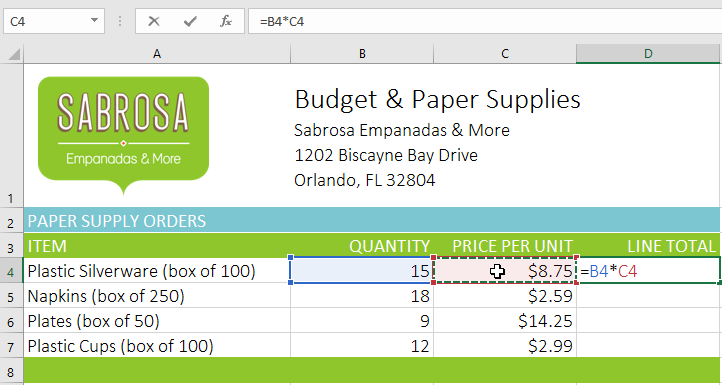
6. NhấnEntertrên bàn phím của bạn. Công thức sẽ đượctínhvàgiá trịsẽ được hiển thị trong ô.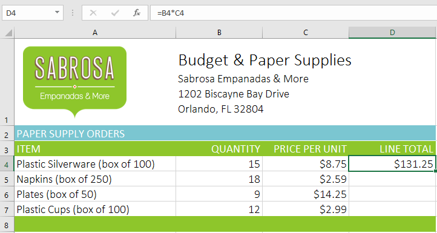
Sao chép công thức bằng núm điều khiển điền
Công thức cũng có thể đượcsao chépsang các ô liền kề bằngđiềntay cầm, điều này có thể tiết kiệm rất nhiều thời gian và công sức nếu bạn cần thực hiệncùng một phép tínhnhiều lần trong một trang tính.Tay điều khiển điềnlà hình vuông nhỏ ở góc dưới bên phải của (các) ô đã chọn.
- Chọn ô chứa công thức bạn muốn sao chép. Nhấp và kéobộ điều khiển điềnqua các ô bạn muốn điền.
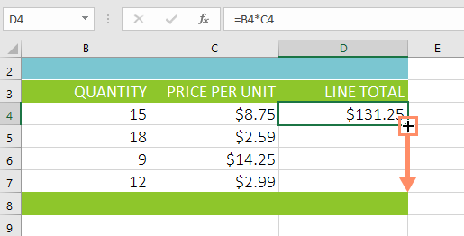
2. Sau khi bạn thả chuột, công thức sẽ được sao chép vào các ô đã chọn.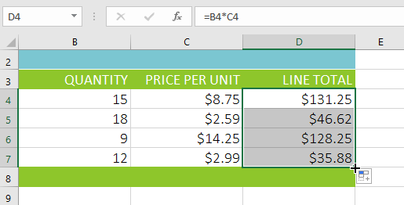
Để chỉnh sửa một công thức:
Đôi khi bạn có thể muốn sửa đổi một công thức hiện có. Trong ví dụ bên dưới, chúng tôi đã nhập địa chỉ ô không chính xác vào công thức của mình, vì vậy chúng tôi cần phải sửa địa chỉ đó.
- Chọnôchứa công thức bạn muốn chỉnh sửa. Trong ví dụ của chúng tôi, chúng tôi sẽ chọn ôD12.
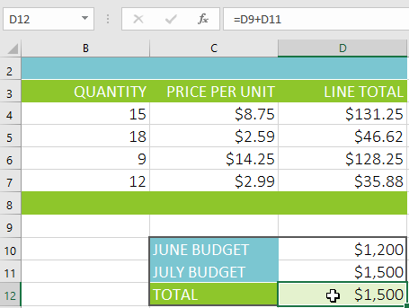
2. Nhấp vàothanh công thứcđể chỉnh sửa công thức. Bạn cũng có thểbấm đúpvào ô để xem và chỉnh sửa công thức trực tiếp trong ô.3. đường viềnsẽ xuất hiện xung quanh bất kỳ ô được tham chiếu nào. Trong ví dụ của chúng tôi, chúng tôi sẽ thay đổi phần đầu tiên của công thức thành ô tham chiếuD10thay vì ôD9.
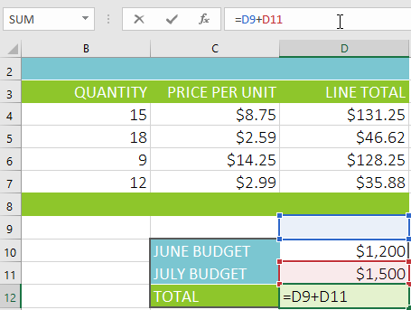
4. Khi bạn hoàn tất, hãy nhấnEntertrên bàn phím hoặc chọn lệnhEntertrong thanh công thức.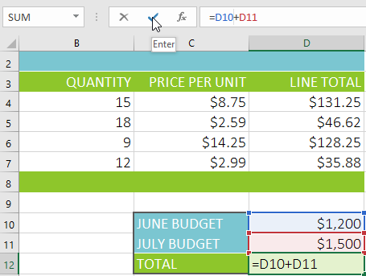
5. Công thức sẽ đượccập nhậtvàgiá trị mớisẽ được hiển thị trong ô.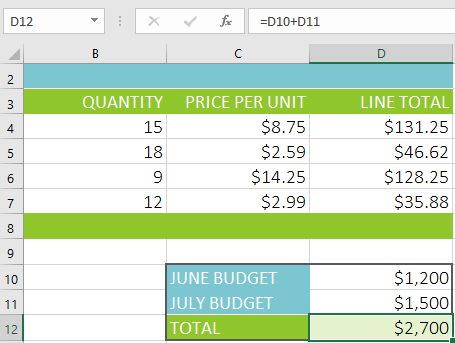
Nếu thay đổi ý định, bạn có thể nhấn phímEsctrên bàn phím hoặc nhấp vào lệnhHủytrong thanh công thức để tránh vô tình thực hiện các thay đổi đối với công thức của mình.
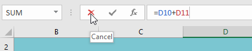
Để hiển thị tất cả các công thức trong bảng tính, bạn có thể giữ phímCtrlvà nhấn**(dấu huyền). Phím dấu huyền thường nằm ở góc trên bên trái của bàn phím. Bạn có thể nhấn**Ctrl+lần nữa để chuyển về chế độ xem bình thường.
Thử thách!
- Mở sổ làm việc thực hành của chúng tôi.
- Nhấp vào tabThử tháchở phía dưới bên trái của sổ làm việc.
- Tạo công thức trong ôD4nhân số lượng trongB4với giá mỗi đơn vị trong ôC4.
- Sử dụngbộ điều khiển điềnđể sao chép công thức trong ôD4sang các ôD5:D7.
- Thay đổi giá mỗi đơn vị của chuối chiên trong ôC6thành $2,25. Lưu ý rằng tổng dòng cũng tự động thay đổi.
- Chỉnh sửa công thức tính tổng trong ôD8để nó cũng thêm ôD7.
- Khi bạn hoàn tất, sổ làm việc của bạn sẽ trông như thế này:

/en/excel/creating-more-complex-formulas/content/